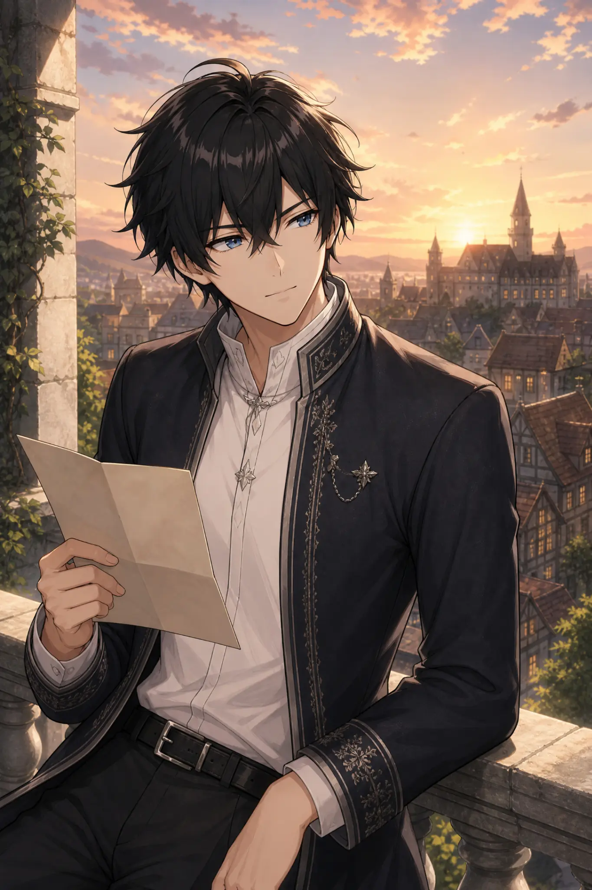

01GAME / OPEN WORLD
Wuthering
Waves
Dunia luas, musik atmosferik, dan rasa bebas setiap kali mulai menjelajah.
↗Hai, aku Ryuto. Penikmat game, pembuat manga, dan pembaca light novel yang percaya bahwa setiap dunia fiksi menyimpan cara baru untuk melihat dunia nyata.

A little context
Bukan sekadar hobi. Ini adalah cara aku menyimpan rasa penasaran.
Aku menikmati momen ketika sebuah game membuatku berhenti sejenak, ketika panel manga menyimpan emosi hanya lewat satu tatapan, dan ketika satu bab light novel mengubah mood sepanjang hari. Portofolio ini adalah rak kecil untuk semua hal yang membuatku terus memperhatikan.
Lihat perjalanan ↓“Cerita yang baik tidak selesai ketika halaman terakhir ditutup. Ia tinggal di kepala, lalu diam-diam ikut membentuk kita.”
— RK / personal note 026Things I return to
Dunia luas, musik atmosferik, dan rasa bebas setiap kali mulai menjelajah.
↗Gerak cepat, cerita getir, dan desain karakter yang selalu berani.
↗Naik kereta, singgah di planet asing, bawa pulang satu cerita baru.
↗Dari membaca panel sampai membuat sketsa sendiri — aku suka melihat bagaimana ide tumbuh dari halaman kosong.
↗Watch / look closer
Trailer resmi dan potongan visual yang mengisi playlist-ku.

The long version
Aku selalu percaya, menjadi kreatif dimulai dari memberi perhatian lebih lama.
Pada awalnya aku hanya bermain untuk mengisi waktu. Lalu aku mulai memperhatikan musik, warna langit, dialog kecil, dan cara sebuah dunia mengatur napasnya. Dari sana, game bertemu manga. Manga bertemu sketsa. Sketsa bertemu cerita.
Game mengajarkanku bahwa eksplorasi terbaik kadang terjadi ketika kita tidak tahu harus ke mana.
Manga dan light novel membuatku menghargai detail, jeda, dan emosi yang tidak selalu diucapkan.
Sekarang aku menyimpan ide lewat catatan, panel, dan halaman kecil yang terus berkembang.
Kalau satu cerita bisa membuat seseorang merasa tidak sendirian, berarti cerita itu sudah melakukan sesuatu yang penting.
”End of transmission / keep exploring